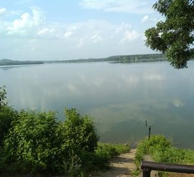
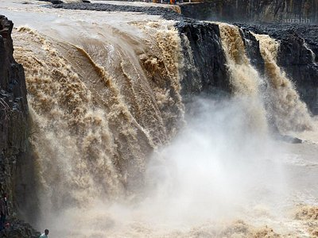
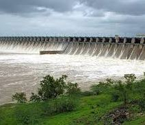
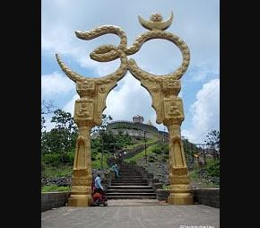
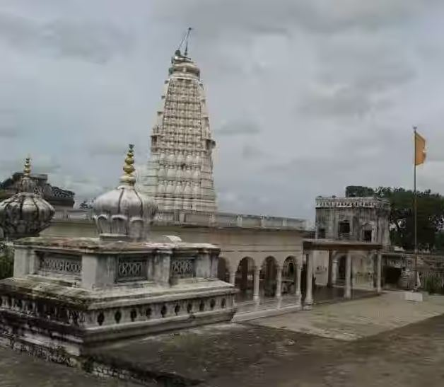
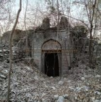

Lower Pus Dam is popular for its scenic views and relaxing atmosphere
Rating : 5/5

Famous for its roaring, multi-stream cascading waters.
Rating 5/5

Isapur Dam is a major earth-fill dam built on the Painganga River in Maharashtra, India
Rating 5/5

Temple near Mahurgarh, Renuka mata temple dedicated to the mother of Parshuram, this is a major pilgrimage center.
Rating 5/5

Poharadevi is one of the important and well-known pilgrimages of Maharashtra.
Rating 5/5

Pusad Fort, often referred to as the Gadhi of Dajisaheb Deshmukh, is a historical site situated in the Pusad taluka
Rating 5/5
I live in this town Pusad. There are best places to visit and to spend valuable and good time with nature. This place is to much environment friendly which is actually sourranded by hills all around. There are many tourist places to explore.
Had good time of 15 years